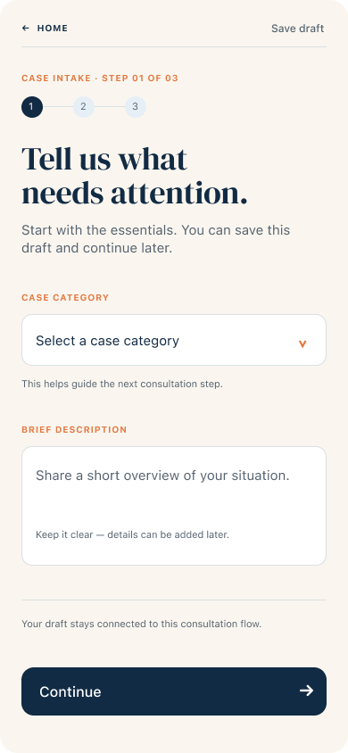
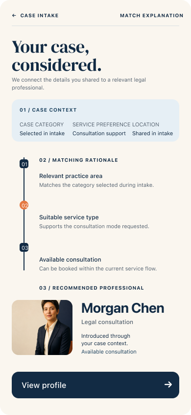

Client summary
Unfamiliar terms. Unclear next steps.
Timely communication helped the client follow case progress.
Design opportunity
Service design · Independent concept
From the first question
to a case you can work through.
I designed a guided consultation prototype and a physical evidence system for mock-court practice.
See the designResearch evidence
At a law firm, I mapped where clients meet lawyers and where case work happens. Two retained interview summaries gave me distinct views of the same service.
Timely communication helped the client follow case progress.
Collecting and organizing material is part of the work of moving a case forward.
Paraphrased from two retained summaries. Sample size and recruitment are undocumented.
Service structure
I used the service journey and information architecture to place digital guidance where people prepare and choose, and physical material where they compare and discuss.
Describe the case and understand the suggested professional.
Gather documents and review evidence with support.
Compare evidence and prepare a position in a fictional case.
Review the case and identify next steps.
The intake and recommendation share the case brief, so the rationale stays visible when the client chooses.
The journey places digital organization alongside evidence and document work.
The proposed digital entry leads into rehearsal with cards, roles and discussion.
The journey closes with a proposed case review and next steps.
Four-stage synthesis of the original journey. The route describes the proposed service.
Design decision / LawPath
I connected the case brief to the recommendation in LawPath, the mobile prototype within LexFlow. What the client shared stays visible at the point of choice.

Start with category and a concise description.

Review the rationale and open a profile.
Design decision / Mock court
I turned case material into two kinds of cards. In the fictional Missing Works of Art scenario, each kind gives participants a different job in the discussion.
Missing Works of Art · Fictional scenario
Facilitated practice concept
Receive the scenario, identify the roles and read the available material.
Separate context from material that can support a claim. Compare the disputed time against other accounts.
Use the evidence to explain a position in the simulated debate, then review the reasoning.
Evidence and reflection
I tested physical mock-court materials and low-fidelity app screens qualitatively. The retained notes give me two concrete problems to investigate next.
Research synthesis, a service journey and blueprint, information architecture and user flows, the LawPath UI prototype, the original card system and qualitative feedback records.
Ask first-time participants to select evidence for an argument and explain their choice. Compare versions with and without inline term explanations.
The evidence documents prototype sessions and feedback. Sample size and task outcomes are undocumented. LexFlow remained a concept.